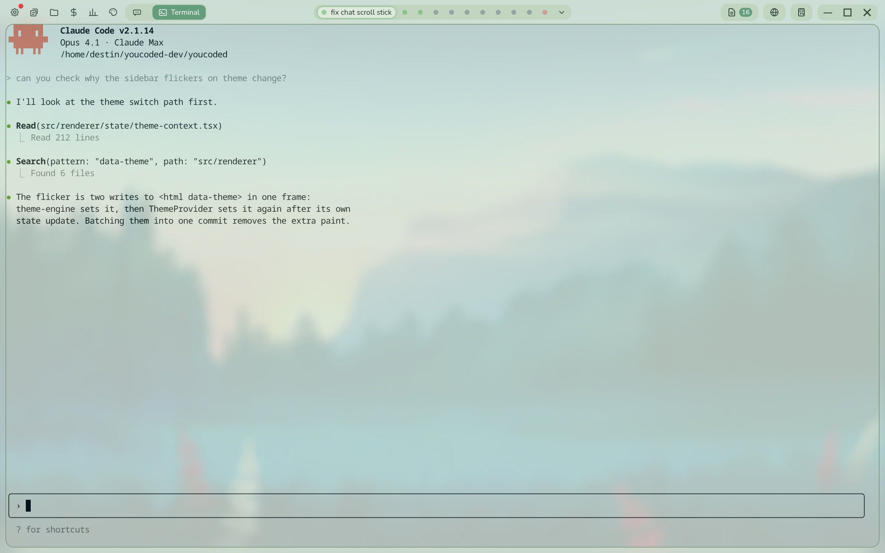
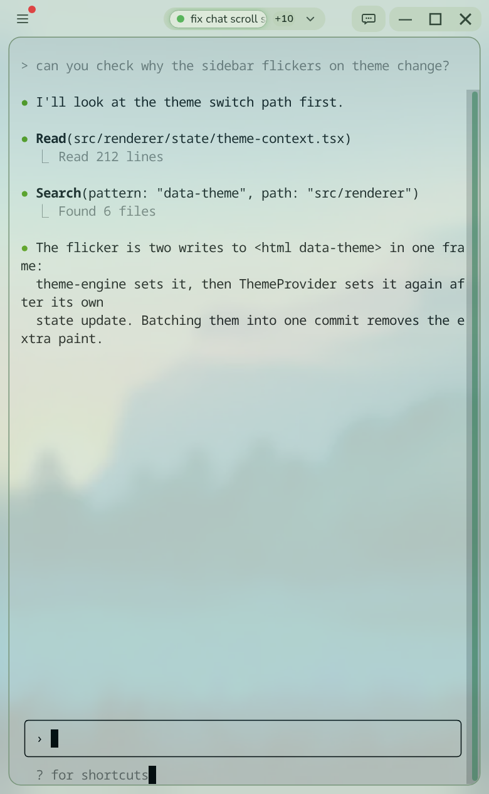
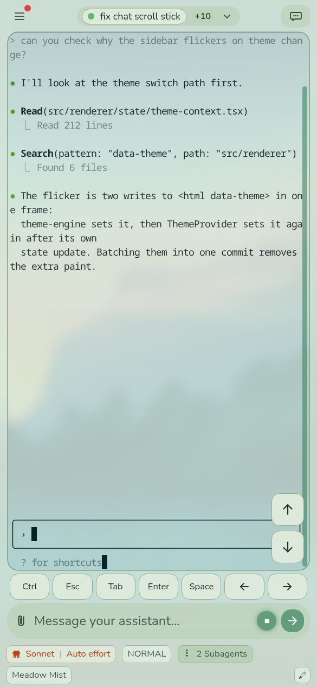
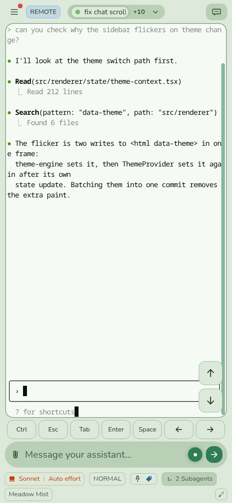
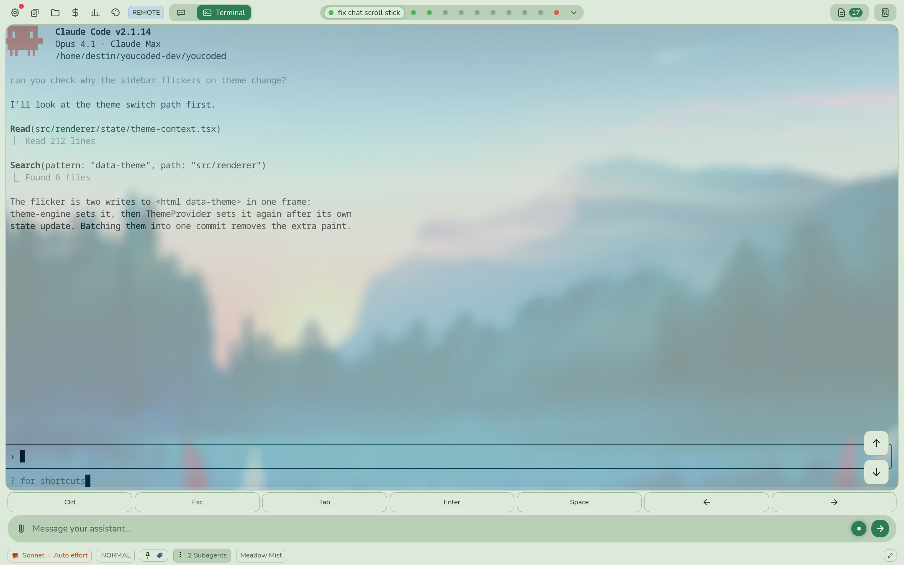
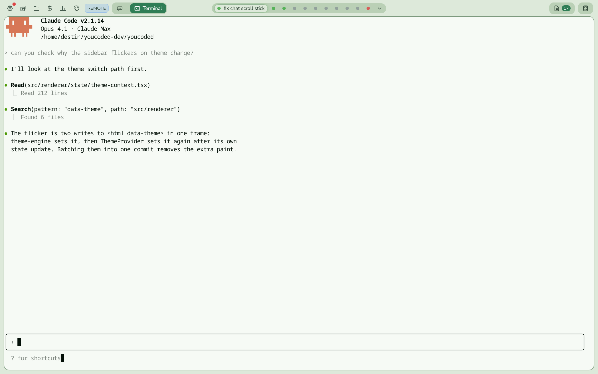

Terminal view on each kind of device
Pictures from the practice app on this branch, 9 Nov 2026. Same session, same theme.
1. What each device shows today

Computer appTerminal fills the window. You type straight into it. No message box.As intended

Computer app, narrow windowSame as above, just narrower.As intended

Phone appTerminal is for looking. You type in the message box; a key row and scroll arrows sit above it.As intended

Phone's web browser (remote access)Identical to the phone app.As intended
Laptop's web browser with a mouse (remote access): changed 10 Nov
You chose the computer terminal. Before and after:

Before Released app today
The phone's message box, key row and scroll arrows stretched across a big screen, and you could also type straight into the terminal. Two ways to type. The released app has done this since April.

After This branch
Same as the computer app: the terminal fills the window and you type straight into it. Phones and touch tablets are unchanged.
Scroll bar fixed 10 Nov (pictures above retaken): the terminal showed a second grey bar under the green one on the computer, and on the phone only the edge of the grey one. Now every device shows one green bar. Earlier pictures are kept in terminal-by-device/before-scrollbar-fix/.
Remote access terminal made flat 10 Nov (laptop and phone-browser pictures retaken): on remote access the terminal alone drew a wallpaper sheet while the rest of the screen is plain theme colours, leaving a mismatched strip at the bottom. It is now plain like the rest of that screen. Earlier pictures: terminal-by-device/before-flat-fix/.
Also visible in the phone pictures: the scroll arrows sit on top of the right end of Claude Code's own input line.
2. How it got this way
- Apr 2026 The computer app is built first. Terminal fills the window; you type into it. A terminal you are not looking at is shrunk to nothing and left alone, because sizing it while shrunk once squashed all its text into one column.
- Apr 2026 The same screens start running on phones. A phone keyboard cannot drive a terminal, so one rule is added: "anything that is not the computer app gets a message box and key row instead of typing in the terminal." Laptops on remote access were swept in by that wording. Nobody chose it.
- Apr 2026 Windows printed the banner twice whenever the terminal was resized, so resizes were made rare: skipped when nothing changed, and sent once after a window drag settles.
- Jul to Oct Fixes on top: the terminal keeps the same size when you flip between chat and terminal; hidden terminals stop drawing; Enter and Space keys added so first-run menus can be answered on a phone.
- Oct 2026 The phone app is rebuilt to run the same engine as the computer. From here a phone and a computer differ only in these screen rules.
- Nov 2026 (this branch, not released) Your phone test: banner and first reply printed twice, and the screen jumped with the keyboard. Cause: on a phone the session started at a default size, then was resized when you first opened terminal view and again on every keyboard open. Fixes: size the session correctly while the terminal is still hidden, and stop resizing when the keyboard moves (slide the picture up instead).
Where the tangle came from: every one of those steps asked "is this a phone?" in its own words. By November there were about fifteen versions, and they disagree for laptops on remote access and for the computer app.
3. What I am changing, and what I am protecting
- Done today: the November "size it while hidden" fix had reached the computer app by accident. It is now phone-layout only, so the computer app behaves exactly as the released app does.
- Done today: the "phone layout or computer layout?" rule for the terminal now lives in one place, with a test that fails if a second copy appears.
- Next: move the remaining "is this a phone?" checks to that one place, then split the keyboard code into single-purpose parts, writing a test for each old fix before touching it.
Old bugs I am guarding against while doing it (each gets a test first if it has none):
- Text squashed into one column when a hidden terminal is sized (Apr).
- Banner printed twice on Windows after a resize (Apr).
- Pasting in chat also pasting into a hidden terminal (Apr).
- Terminal changing size when flipping between chat and terminal (Jul).
- First-run menus that cannot be answered on a phone (Sep).
- Banner and first reply printed twice on a phone; screen jumping with the keyboard (Nov, your Flip test).